OTHER TOOLS
To help manage the server, you may choose to install other tools. Here's some of my favorites:
7 Zip - easier than the extract wizard in Windows
Sublime Text - you could also choose Notepad++, Atom, Brackets, Visual Studio Code, or a number of others. You'll want one that can preserve Unix-style line endings, so avoid Notepad.
IIS (Web Server)
Internet Information Services (IIS) is the web server that comes bundled with Windows.
Install
Start -> Type
Windows Featuresto launchTurn Windows features on or off.Inside
Internet Information Services, insideWeb Management Tools, turn onIIS Management Console.Inside
Internet Information Services, insideWorld Wide Web Services, insideApplication Development Featuresturn onASP.NET 4.6. Many other things will turn on when you choose this.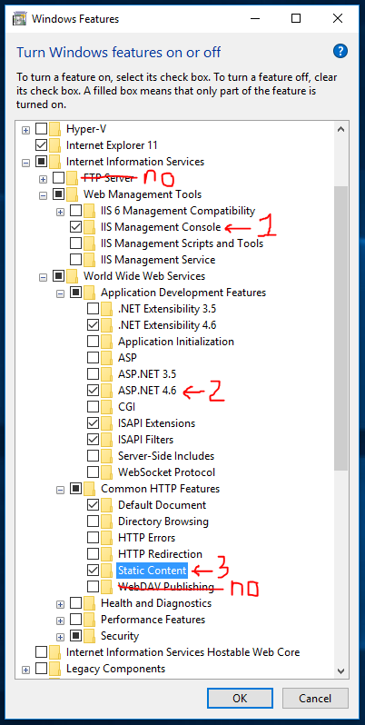
You may choose to turn on other settings in
Internet Information Servicessuch as Logging.Ensure that these settings are OFF to avoid security risks:
Inside
World Wide Web ServicesensureWebDAV Publishingis OFF.Ensure
FTP Serveris OFF.
Push OK to start the install.
Test it out
Open a browser and navigate to localhost.
You should see the "Welcome to IIS" page.
Configure
By default, IIS creates a default website which may get in your way later on.
Start ->
Internet Information Services (IIS).Open up Sites
Right-click on Default Web Site and click Remove.
Click on Application Pools.
Right click on each application pool listed and click Remove.
Once you do this, browsing to localhost will give you a "connection refused" page.
SQL SERVER DEVELOPER EDITION
Starting in March 2016, SQL Server Developer Edition is now a free download. We'll use SQL Developer Edition here because SQL Express doesn't have SQL Agent, useful for scheduling maintenance tasks. See also https://blogs.technet.microsoft.com/dataplatforminsider/2016/03/31/microsoft-sql-server-developer-edition-is-now-free/
Install
Download SQL Server 2016 Developer Edition
Mount
en_sql_server_2016_developer_bunch_of_numbers.isousing your favorite tool or double-click the ISO to mount it as a CD drive in Windows 10.Open the installer by opening the new CD drive.
Choose installation on the left, and New SQL Server Stand-alone installation from the right
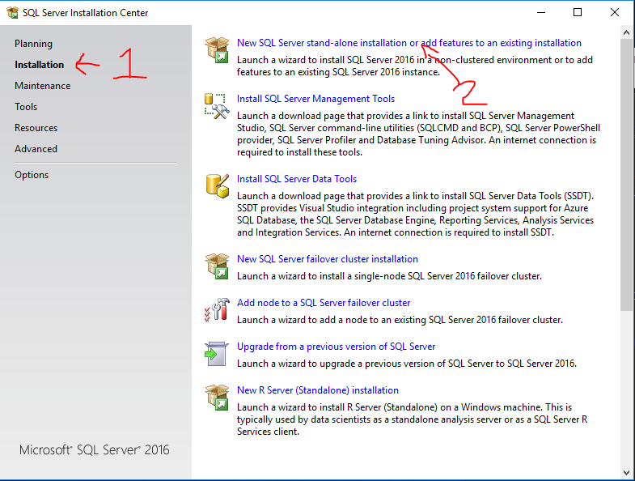
Click next a few times.
The Windows Firewall warning is ok. We won't use SQL Server from other machines.
Note these important settings:
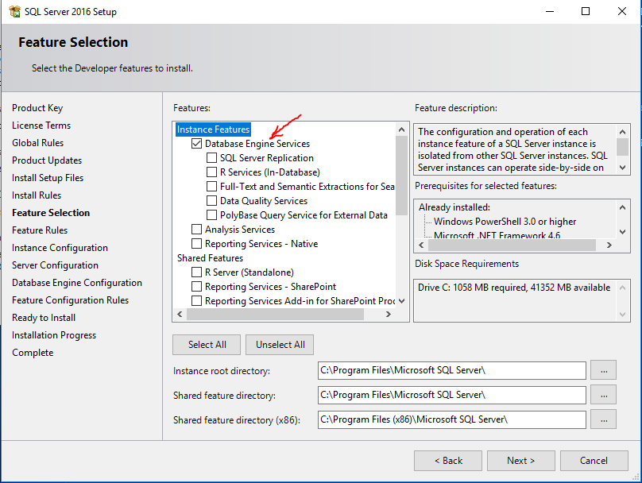
Though SQL Server comes with lots of features, we only need the base engine.
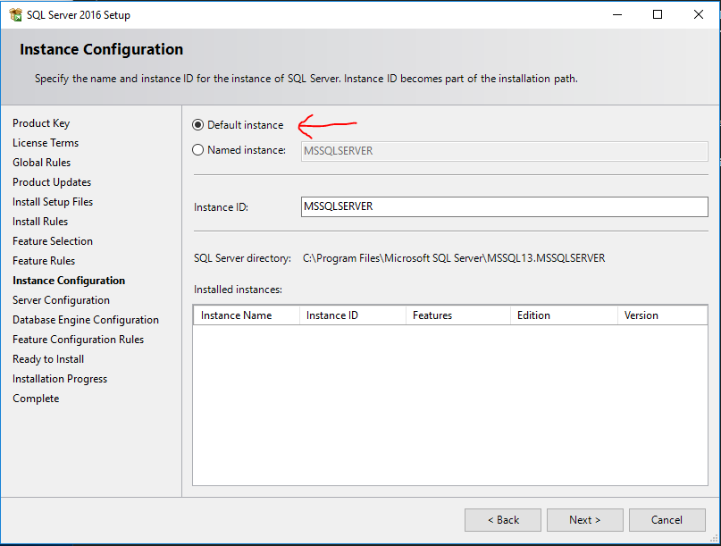
We'll assume the default instance for the rest of the workshop.
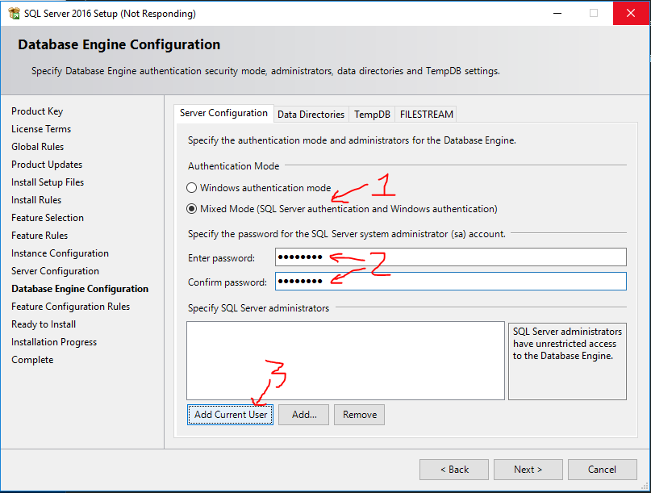
Some of the setup will require username/password, so we'll choose mixed-mode (Windows Auth and user/pass), we'll set a password, and add the current user as an admin -- so you can manage your database.
Finish the install choices, and complete the install.
Configure
TeamCity will use JDBC to connect on port 1433. Let's enable TCP connections to SQL Server.
Start ->
SQL Server 2016 Configuration Manager.Open
SQL Server Network Configuration, and openTCP/IP.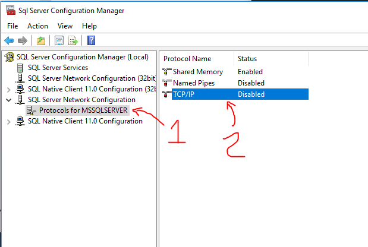
Enable TCP/IP.
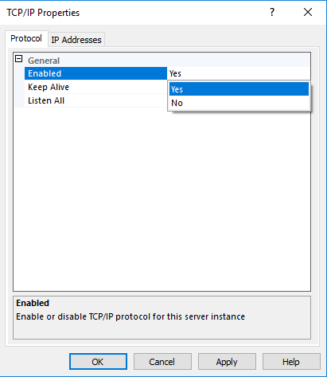
Switch to the IP Addresses tab to see the port is 1433.
Close the dialog, OK to the message about restarting.
Switch to the SQL Server Services, and restart the SQL Server service.
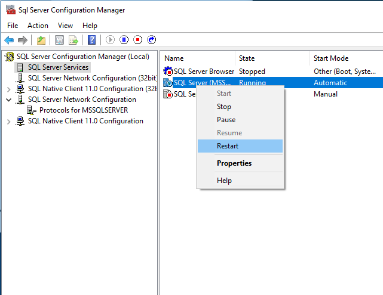
Test it out
We haven't installed SQL Management Studio yet, so we can't test it yet.
Once SQL Management Studio is installed:
Launch SQL Management Studio
Connect to the default instance (use the server name or change to
.)If you get no errors, named pipe connections work.
Click Connect in the top-left.
Switch to
SQL Server Authentication(meaning username/password).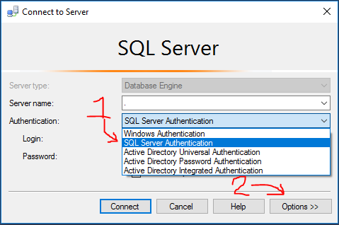
Username is
sa, password is the password you entered during installation.Choose Options.
Choose the Connection Options tab.
Switch to
TCP Protocol.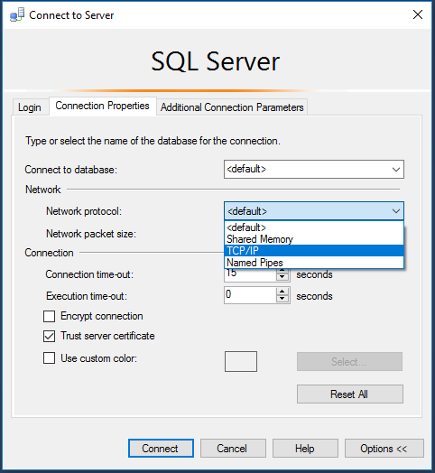
Push Connect.
If you get no errors, TCP connections work too.
SQL SERVER MANAGEMENT STUDIO (SSMS)
In past versions, SQL Server Management Studio (SSMS) was part of the SQL install disk. It's now a separate download because it is now free where the SQL Server engine is still paid.
Install
Download SSMS
Launch
SSMS-Setup-ENU.exe.Push next, and complete the install. Because it uses the Visual Studio 2015 shell, this takes a long time.
Restart the machine when prompted.
Test it out
Start ->
Microsoft SQL Server Management StudioConnect to the default instance (use the server name or change to
.)If you get no errors, it works.
Let's return to SQL Server, and verify
TCPconnections work too.
NuGet Command Line
NuGet command line allows us to run nuget restore as part of the build.
Install
Download NuGet Commandline
Create
NuGetfolder inC:\Program Files (x86)Copy
nuget.exeinto the folder.
Configure
Let's add NuGet to the PATH environment variable so commands can use it without specifying the full path.
Start -> Type
environment variablesto launchEdit System Environment VariablesClick
Environment Variables...In the lower
Systemsection, choosePATHand clickEdit
Add
C:\Program Files (x86)\NuGetto the list.Restart any services or terminals that depend on NuGet to update the
PATHenvironment variable.
Test it out
Open a new command prompt in any directory. Note: because we just changed the
PATHenvironment variable, existing processes and shells won't be able to run msbuild.Type
nuget.If you don't see any errors, it worked.
MSBuild
MSBuild is installed with .NET 4.0 in C:\Windows\Microsoft.NET\Framework64\v4.0.30319, but this won't build .NET 4.5 or 4.6 projects. Let's install a more recent version of MSBuild.
Install
Download Microsoft Build Tools
Launch
BuildTools_Full.exe.Push next, and complete the install.
Restart any services or terminals that depend on msbuild to update the
PATHenvironment variable.From a machine with Visual Studio installed, copy the
C:\Program Files (x86)\MSBuild\Microsoftfolder and merge it into the folder on this machine. On the thumb drive, this isMSBuild-Microsoft.zip. This puts the*.targetsfiles into place for building weird things.
Configure
Let's add MSBuild to the PATH environment variable so commands can use it without specifying the full path.
Start -> Type
environment variablesto launchEdit System Environment VariablesClick
Environment Variables...In the lower
Systemsection, choosePATHand clickEditAdd
C:\Program Files (x86)\MSBuild\14.0\Binto the list, ensuring it's above anyC:\Windows\Microsoft.NET\Frameworkdirectories.Restart any services or terminals that depend on MSBuild to update the
PATHenvironment variable.
Test it out
Open a new command prompt in any directory. Note: because we just changed the
PATHenvironment variable, existing processes and shells won't be able to run msbuild.Type
msbuild /version.If you don't see any errors, it worked.
GIT
There are other version control systems, but Git is the defacto standard now. Unlike previous generations of version control where we were building competing products, because Git is free and open source, we're now building collaboration and integration with Git.
Install
Download Git.
Launch
Git-2.bunch-a-numbers.exe.Click next a few times.
Note these important settings:
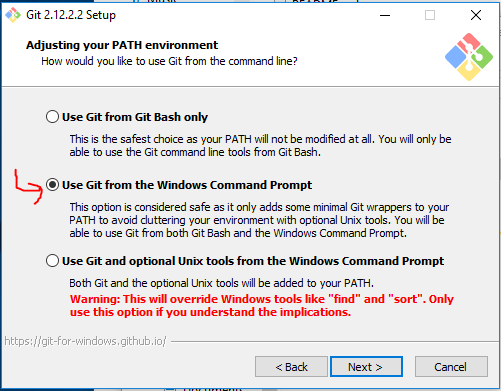
This says put Git's install directory in
PATHenvironment variable.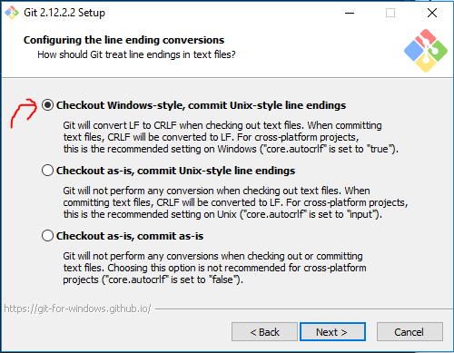
This says change
\r\nto\nwhen committing and\nto\r\nwhen checking out. Though it's tempting to choose the "leave it how it is" setting, if one person on your team forgets this setting, you'll see a lot of^Mat the end of every line in diff views, and Visual Studio will constantly prompt you to normalize line endings. Better to standardize on this default.Finish the install choices, and complete the install.
Restart any services or terminals that depend on git to update the
PATHenvironment variable.
Configure
Open a new command prompt in any directory. Note: because the installer changed the
PATHenvironment variable, existing processes and shells won't be able to run git.Type
git config --global user.name "Sample User"substituting your first and last name.Type
git config --global user.email "you@example.com"substituting your email address. Your name and email become metadata on each commit.
Test it out
Create a directory -- you'll delete it in a minute.
Open a new command prompt in this directory. Note: because the installer changed the
PATHenvironment variable, existing processes and shells won't be able to run git.Type these commands:
git init echo "test" > test.txt git add test.txt git commit -m "test"If you got no errors in the terminal, git is now installed correctly.
Close the terminal, and delete the test directory.
Show File Extensions
By default, Windows hides file extensions, so files like .gitignore or folders like .git just show up as . in Windows Explorer. Let's show file extensions.
Start -> Type 'Folder options' until it prompts for
File and Folder Options.Switch to the
Viewtab.Uncheck
Hide extensions for known file types.Choose
Show hidden files, folders, and drives.Uncheck
Hide protected operating system files.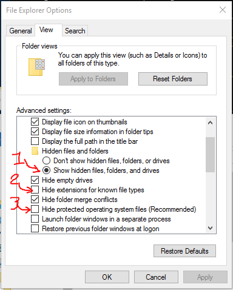
BUILD .NET SOLUTION
We're going to flex the Microsoft Build tools to build a website and run unit tests.
Background
This project is just a new ASP.NET MVC website using .NET 4.5.2 with OctoPack NuGet package, and a companion unit test project switched to use XUnit. You can find this solution on GitHub at https://github.com/robrich/CICD-Sample-App.
Contents of the Zip File
File -> New Project
ASP.NET Web Application (not core)
MVC project template
Authentication to No Authentication
Add Unit Tests
Add these NuGet packages:
- xunit - the test library
- xunit.runner.visualstudio - for the Test Explorer window in VS
- xunit.runner.console - to run tests from the command line
- FluentAssertions - asserts read like sentences
- OctoPack - used by Octopus Deploy to build assets
Change Home Controller Tests to use XUnit instead of MSTest
Commit this to a local git repository.
Setup
Create a new folder in a conspicuous spot.
Unzip
.NET Website source code.zipinto this folder.
Run
Open a command prompt in the directory with the solution file.
Type
nuget restore.Type
echo %ERRORLEVEL%. If it returns0the nuget restore worked.Type
msbuild /m /p:Configuration=Release./msays "use all CPUs".Type
echo %ERRORLEVEL%. If it returns0the build worked.Inside
packages\xunit.runner.console.2.2.0\toolsyou'll findxunit.console.exe, the test runner. It's a NuGet package, sonuget restorebrought it in.Type
packages\xunit.runner.console.2.2.0\tools\xunit.console.exe WebApplication1.Tests\bin\Release\WebApplication1.Tests.dll -nunit WebApplication1.Tests.xmlto run the tests and output the results in NUnit format to an xml file.Type
echo %ERRORLEVEL%. If it returns0all the tests passed.
Other Options
- If you're building .NET 4.6, you'll need .NET Targeting Pack for the target .NET version. If you're building .NET 3.5 or earlier, you'll need the .NET SDK for the target .NET version.
TEAMCITY
JetBrains TeamCity is a build server not unlike Jenkins, Team Foundation Server, Cruise Control, or Bamboo. TeamCity is free for up to 3 build agents and 20 build configurations, making it ideal for small companies.
Setup
We'll need a Windows account to run the TeamCity website and build agent. Technically these can run under the SYSTEM account, but there's cases where you'll want to login as the TeamCity account to install certificates or adjust registry keys. Better to run TeamCity as a regular user.
You could choose to make this a domain user rather than a local user.
Right click on
This PC(formerlyMy Computer), and choose Manage.Choose Local Users and Groups then Users.
Right-click in the main window and choose
New User.Enter necessary user details.
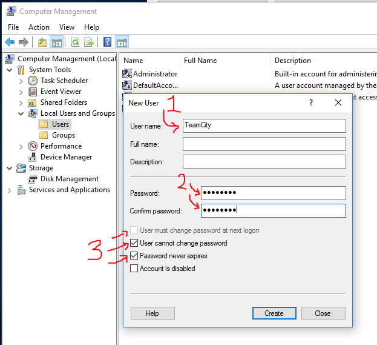
Ensure
User must change passwordis not checked,User cannot change passwordis checked, andPassword never expiresis checked.Click
Create.Open the newly created user, choose
Member Of, and addAdministrators. The user may stop and start services, configure IIS settings, or other behaviors restricted to administrative users, so best to give this account access up front.
Install
Download TeamCity
Launch
TeamCity-bunch_of_numbers.exe.Click next until it installs TeamCity.
Change the port to
8080because IIS runs on port 80 by default.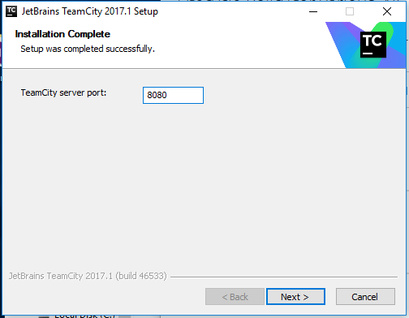
No changes are needed on this page, but grab a screen shot for reference later. The TeamCity documentation refers to , but the TeamCity documentation makes reference to the
System Directory,Work Directory, and theData Directorywhich is not shown here, but stored inC:\ProgramData\JetBrains\TeamCity.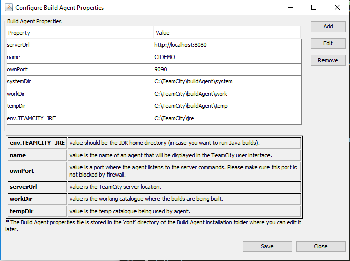
For both the TeamCity Server and TeamCity Agent, choose to run under a user account.
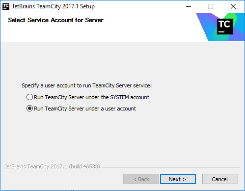
Enter the account details for the user created above.
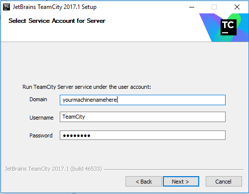
Choose to Open the TeamCity UI after setup is finished, which will open http://localhost:8080/ in your default browser.
Configuration Setup
TeamCity will connect via JDBC username/password to SQL Server, so let's set up a database and user.
Start -> SQL Server Management Studio (SSMS)
Connect to the local database using Windows Authentication.
Right-click on Databases, and choose
New Database.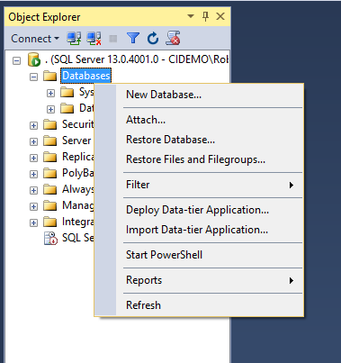
Enter a Database Name, and click Create.
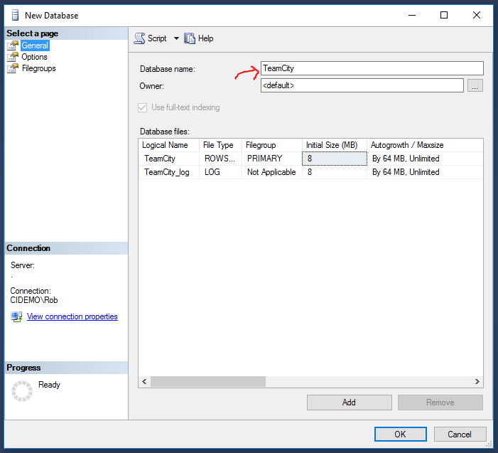
Inside Security, right-click on Logins and choose
New Login.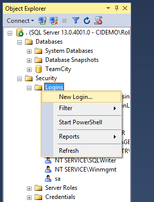
Enter the Login Name, password, uncheck
Enforce password policy, and change the Default database to the database created above.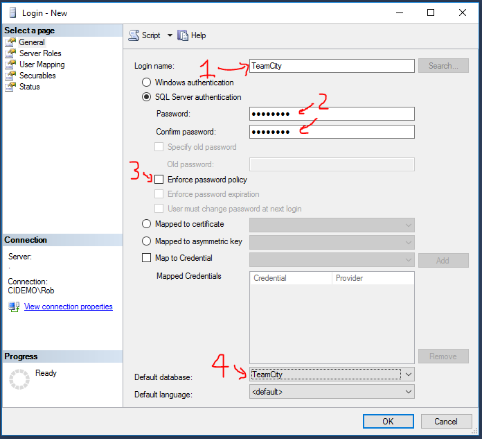
Switch to the
User Mappingpage, and set:a. Check the database created above.
b. Set default schema to
dbo.c. Check
db_ownerbecause TeamCity will create tables.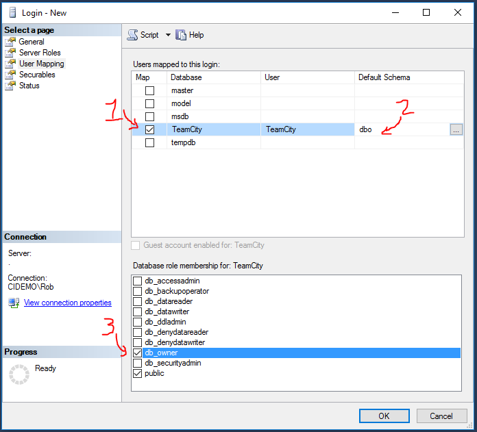
(Technically you only need
db_owneras you first configure TeamCity and whenever you upgrade to a new TeamCity version.)Click
OKto create the user.
Configure
If it didn't launch already, open http://localhost:8080/ in your favorite browser.
Click Proceed.
Configure the database connection by choosing:
a.
MS SQL Serveras the database type.b. Download Microsoft JDBC Driver
c. Unzip
sqljdbc_6.0.8112.100_enu.exeto a convinient directory.d. Copy
sqljdbc42.jarfrom theenu\jre8folder toC:\ProgramData\JetBrains\TeamCity\lib\jdbce. Back on the TeamCity website, click
Refresh JDBC drivers.f. Enter the database name you created above.
g. Enter the username and password you created above.
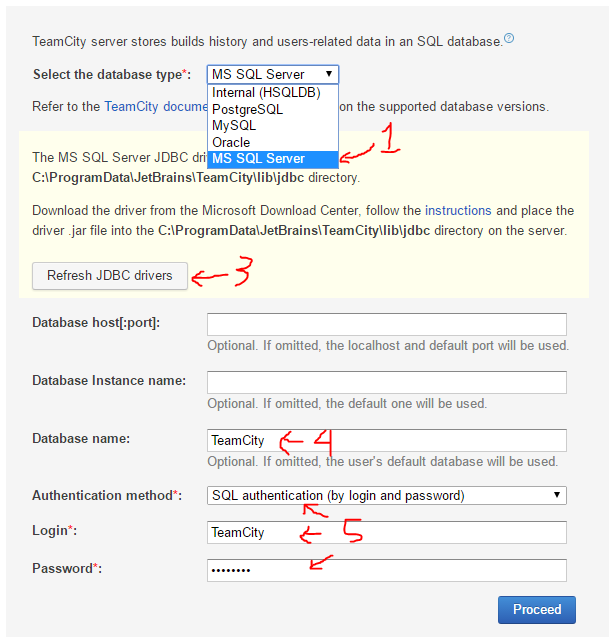
h. Click Proceed.
Click next a few times.
Create the Administrator account -- the first user login to TeamCity.
You may choose to set your name and email address, or skip it by hitting the TeamCity logo on the top-left.
Choose Administration on the top-right.
In Global Settings, change the
Default VCS trigger quiet periodto1second -- the time after it notices changes before it starts building. The quiet period allows the server to wait for other commits and build them all together. 60 seconds is great for a real build server, but you won't want to wait a minute after pushing changes before the build kicks up.In Global Settings, change the
Default VCS changes check intervalto5seconds. 60 seconds is great for a real build server, but you won't want to wait a minute after pushing changes before the build server notices.
TeamCity is now setup and ready to add new builds.
OCTOPUS DEPLOY
Octopus Deploy takes build assets (applications and databases) and deploys them to each environment. It's easy to promote builds up the stream from dev to test to QA to production. Octopus is free for small teams for commercial use.
Install
Download Octopus Server.
Launch
Octopus.bunch_of_numbers.msi.Push Next a bunch of times.
Click Finish to launch the Octopus Manager.
Setup: Create Windows User
We'll need a Windows account to run the Octopus Deploy website and tentacle agent. Technically these can run under the SYSTEM account, but there's cases where you'll want to login as the OctopusDeploy account to install certificates or adjust registry keys. Better to run Octopus as a regular user.
You could choose to make this a domain user rather than a local user.
Right click on
This PC(formerlyMy Computer), and choose Manage.Choose Local Users and Groups then Users.
Right-click in the main window and choose
New User.Enter necessary user details.
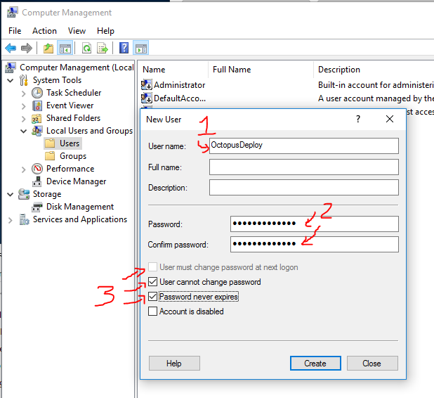
Ensure
User must change passwordis not checked,User cannot change passwordis checked, andPassword never expiresis checked.Click
Create.Open the newly created user, choose
Member Of, and addAdministrators. The user may stop and start services, configure IIS settings, or other behaviors restricted to administrative users, so best to give this account access up front.
Setup: Create Database
TeamCity will connect via username/password to SQL Server, so let's set up a database and user.
Start -> SQL Server Management Studio (SSMS)
Connect to the local database using Windows Authentication.
Right-click on Databases, and choose
New Database.Enter a Database Name, and click Create.
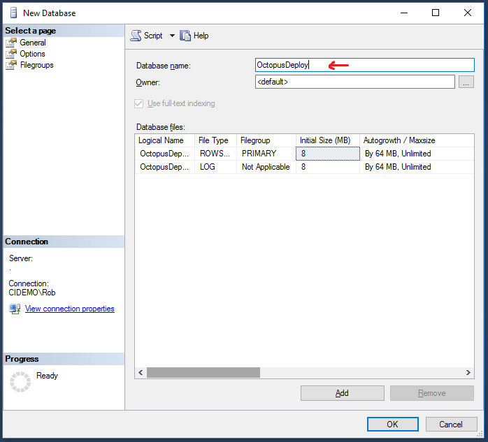
Inside Security, right-click on Logins and choose
New Login.Enter the Login Name, password, uncheck
Enforce password policy, and change the Default database to the database created above.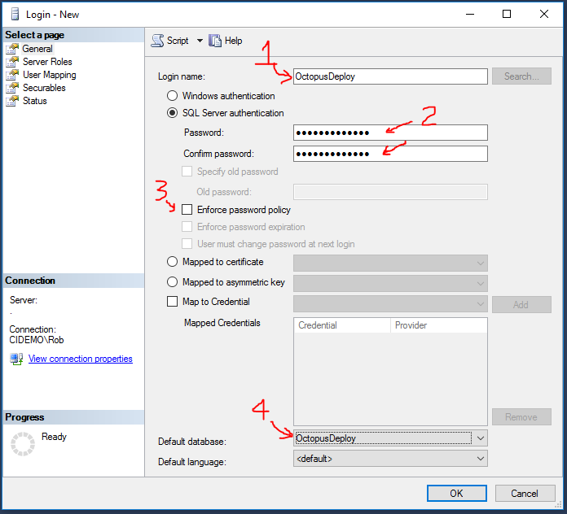
Switch to the
User Mappingpage, and set:a. Check the database created above.
b. Set default schema to
dbo.c. Check
db_ownerbecause Octopus Deploy will create tables.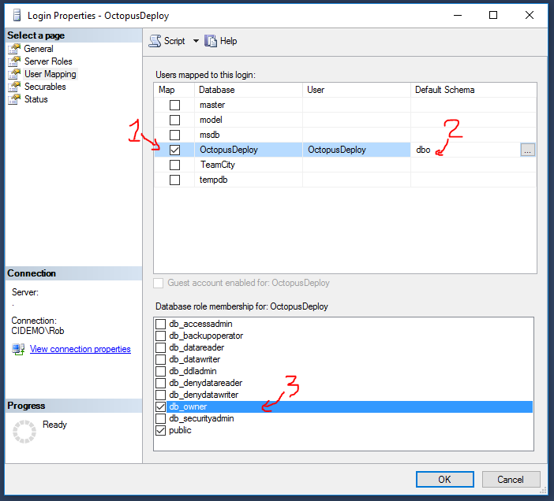
(Technically you only need
db_owneras you first configure Octopus Deploy and whenever you upgrade to a new version.)Click
OKto create the user.
Configure
Sadly, you must sign up for the 45-day free trial of the Pro version on startup. We'll quickly flip to the community edition after we install.
Choose
Custom Domain Account, then clickSelect Userto pick the Windows user you created above.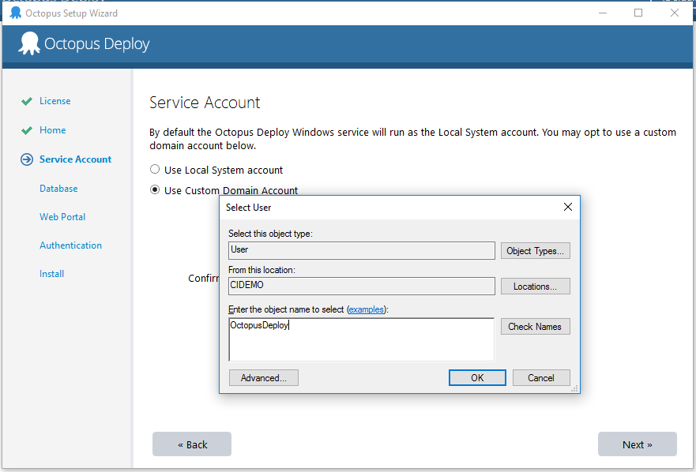
Set Server Name to
(local), chooseSQL Server Authentication, and enter the database credentials and database name you created above.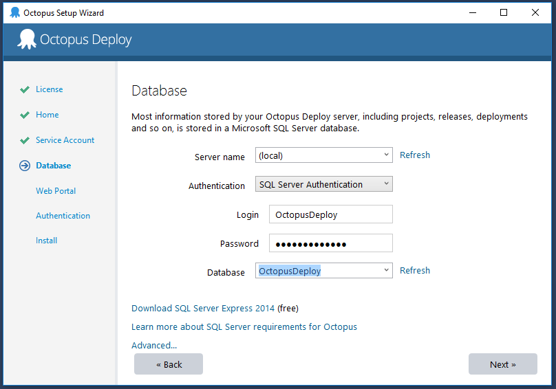
Change the port to
8090because IIS runs on port 80 by default.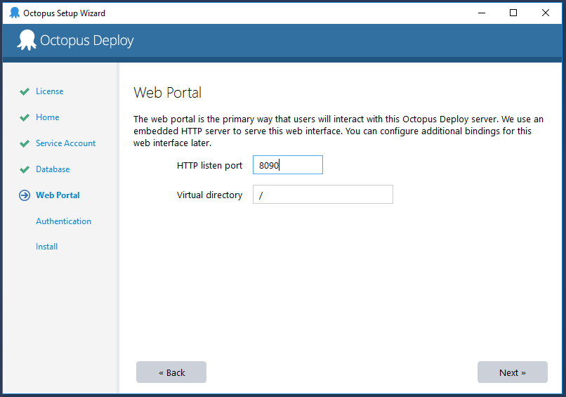
Create the first user account to the web portal.
Click next a few more times and finish to kick off the install.
Click
Open in browserto launch the Octopus web portal.After logging in, click Configuration on the top-right.
In License, switch to
Community Editionand save.
Octopus Deploy is now setup and ready to setup deployments. Kudos to the Octopus team for the helpful setup experience that'll walk us through this process.
Backup Master Key
Optional: backup your master key to be able to safely restore secrets stored in Octopus.
GIT SERVER
For production use, you'll look to GitHub, BitBucket, Visual Studio Team Services, or another cloud provider. Or perhaps you'd like to run Git on-premise with servers like WebGit.NET or any of the servers listed here
For this demo, we'll just use a local folder containing a bare git repository.
Create
Create a new folder at
C:\git-server.Create a folder named
DotNetWebsiteinsideC:\git-server.Open a terminal in this folder and run
git init --bare.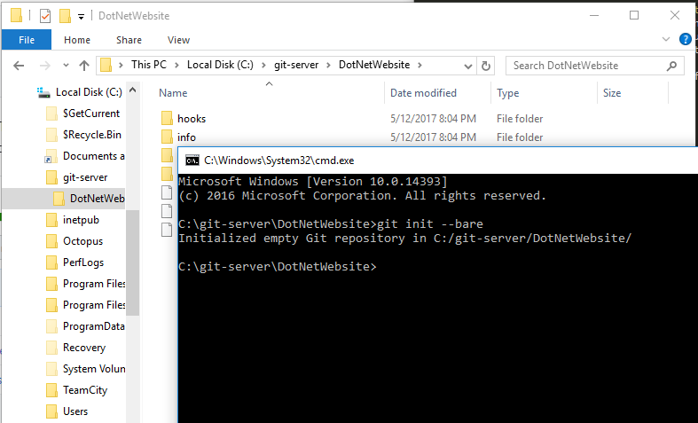
Configure
Open a command window inside the source code project you created in Step 7: BUILD .NET SOLUTION.
Type
git remote add origin c:\git-server\DotNetWebsite. This creates a link from our project to the "server".Type
git push origin master. This pushes the source code to the server.Type
git branch -u origin/master. This links the current local branch to the server's branch.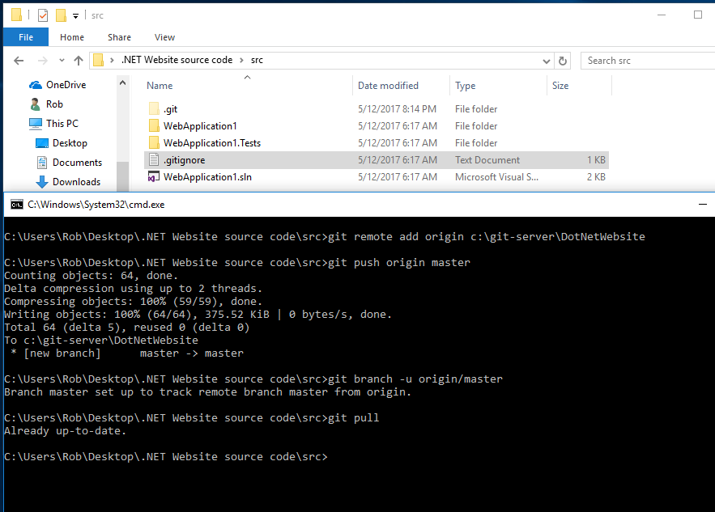
Test it out
From the source code project terminal, type
git pull.If you get no errors and it says
Already up to date, it works.
THE BUILD SCRIPT
Though we could use build server plugins, this is fragile:
Updating or rebuilding the build server requires reinstalling plugins.
All projects must use the same version of each plugin.
All plugins from all projects must be compatible.
To avoid these pitfalls, we'll use the build server solely to check the git repository and run a script. Everything else will be done in this script and versioned together with our app. Want to build an old version of the software? Just check out that version and run the build script.
Elements of the Script
We need the script to do the following things:
Restore NuGet packages
Build the solution
Run the unit tests
Writing the build script
We could choose Powershell or Make or Gulp or Cake or CSscript, but for simplicity, let's use a batch file:
Create
build.batusing your favorite notepad replacement in the source code directory you crated in Step 7: BUILD .NET SOLUTION.Add the NuGet restore lines:
nuget restore if not %errorlevel% equ 0 ( exit /b %errorlevel% )We use
exit /b %errorlevel%to pass build errors to the calling program. Without this, the build would silently fail and just continue to the next line.Add the lines to build the solution:
msbuild WebApplication1.sln /m /p:Configuration=Release if not %errorlevel% equ 0 ( exit /b %errorlevel% )/msays "use all cores"Add the lines to build the solution:
msbuild WebApplication1.sln /m /p:Configuration=Release if not %errorlevel% equ 0 ( exit /b %errorlevel% )Add these lines to run the unit tests:
packages\xunit.runner.console.2.2.0\tools\xunit.console.exe WebApplication1.Tests\bin\Release\WebApplication1.Tests.dll -nunit WebApplication1.Tests.xml if not %errorlevel% equ 0 ( exit /b %errorlevel% )When we run package restore, the xunit runner will get restored to
packages\xunit.runner.console.2.2.0\tools\xunit.console.exe.-nunit file.xmlwill write the unit tests results in NUnit format to a file. We'll tell the build server to pick up this file and show the unit test results.
Test it out
From a terminal in the source code directory, run
build.bat.Type
echo %errorlevel%. If it says0, it worked.
Add the file to source control
Open
.gitignorein your favorite text editor.Add a new line with
*.Tests.xmlso git will ignore test results.Type these commands to add the build script to source control:
git add .gitignore git add build.bat git commit -m "add build script"Type
git push origin masterto send the changes to the git server.
TEAMCITY BUILD
We've already got TeamCity running on port 8080. Let's create a build.
Configure
Click Administration on the top-right.
Click
Create project.Click
Manually. Though the "From a repository URL" is enticing, our repository url is just a local folder, so it's difficult for TeamCity to discover things about it.Enter a project name, the Project ID will get filled out automatically.
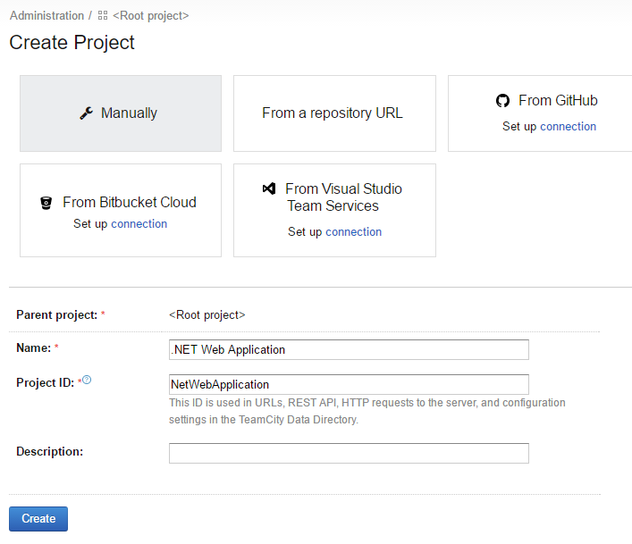
Click
Create.In the next screen, click
Create build configuration.Again click
Manually, enter a name, and the Build configuration will get filled out automatically.Click
Create.
Create link to Version Control
A "VCS Root" is a link to the source control repository the build will use.
In the next screen, switch
Type of VCSfrom Guess toGit.Enter a
VCS Root name.Enter the Fetch URL as
C:\git-server\DotNetWebsite.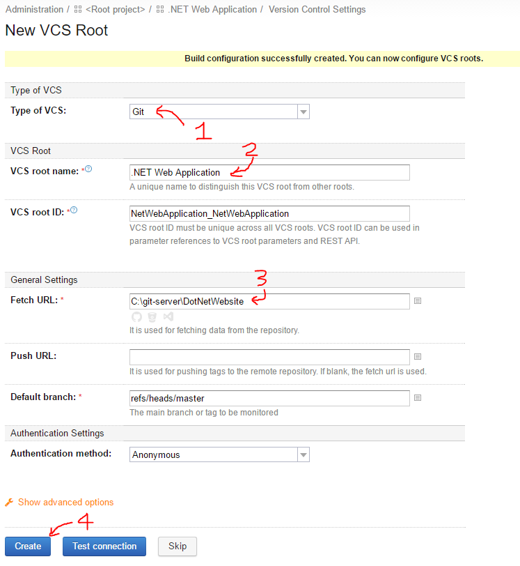
Optional: Click
Advanced Options, and changeUsername styletoAuthor Name and Email.Click
Create.
Create Build Steps
Choose
Build Stepsfrom the menu on the left.Click
Auto-detect build steps.Choose
Custom script: call build.batfrom the returned list, and click "Use selected".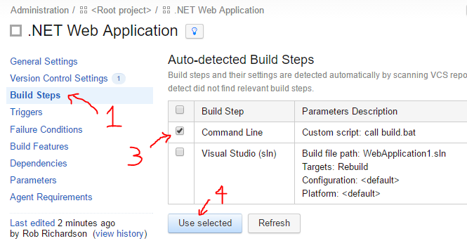
Though the solution step is intriguing, our build script will be versioned with our project, freeing us from potential plugin collision.
Source change -> Build trigger
Choose Triggers
Add a new triggerChoose
VCS triggerClick Save.
This will start the build every time TeamCity discovers a source code change.
Show Test Results
Choose Build Features.
Click
Add a build feature.Choose
XML report processingfrom the drop-down.Report type is
NUnit.Monitoring rules is the file path to match:
*.Tests.xml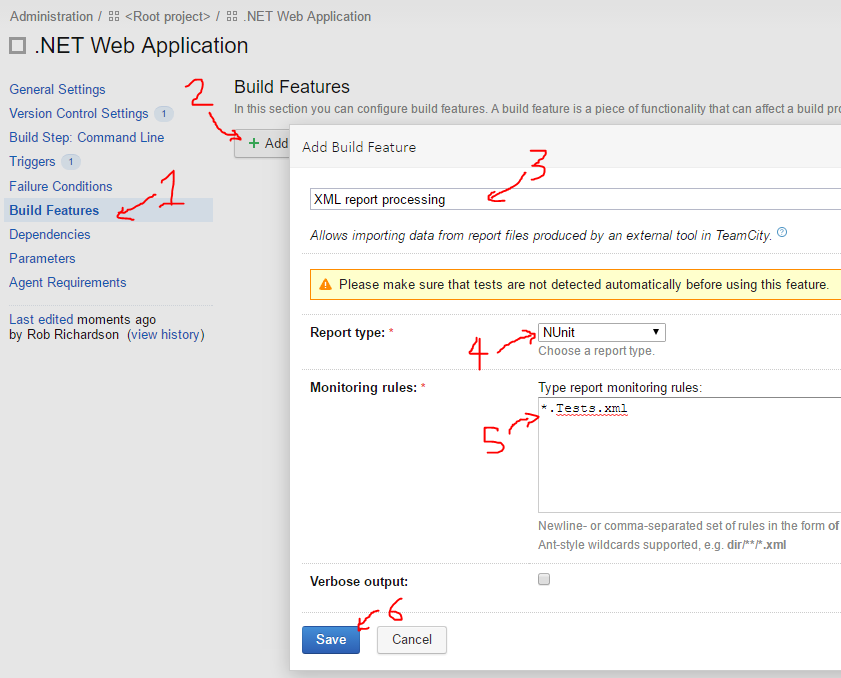
Click
Save.
Test it out
Now that we've got our build configured, let's run it.
Click on the TeamCity logo or
Projectsin the top-right.Click
Runon the far right of the build we created.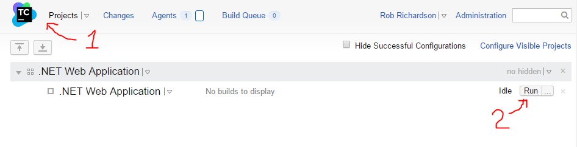
In a minute or two, the build will go green. Congratulations! Celebrate!
Click on the "Tests passed" link to see details about the build including test results, build log, and git commit details.
Optional: Save TeamCity configuration to Source Control
Optional: TeamCity can save the configuration to source control so you can keep track of how build configurations evolve.
Create
C:\git-server\TeamCityfolder.Open command prompt in this folder.
Type
git init --bare.In TeamCity dashboard, click
Administration.Click
Projects.Click
Root Project.Click
VCS Roots.Click
Create VCS Root.Name the root
TeamCity.Set the
Fetch URLtoC:\git-server\TeamCity.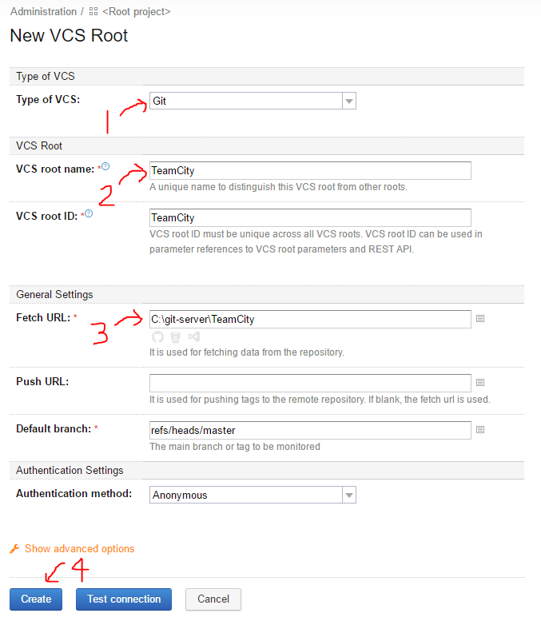
From the menu on the left, choose
Versioned Settingsat the bottom.Click
Synchronization enabled.Choose the
TeamCityVCS root.Click on
Show settings changes in builds.Click Apply.
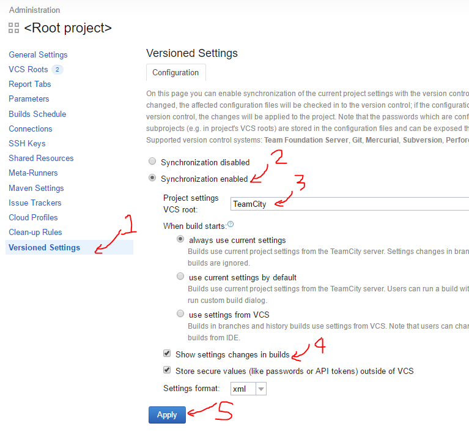
OCTOPUS DEPLOY BUILD
Now that we have a TeamCity build, let's deploy it to IIS with Octopus Deploy. Octopus Deploy's setup wizard is wonderful at guiding us through all the things.
Create Environments
An environment represents a deployment phase. For example, we could have multiple "Dev" servers, some "Web" servers, some "Database" servers, but all "Dev" servers. "Dev" is the environment, "10.0.0.1" is the "Deployment Target", "Web" is the role.
Launch Octopus Web Dashboard at http://localhost:8090.
Click
Create environmentsinStep 2: Configure.Click
Add your first Environment.Name the environment
Devand clickSave.Click
Add Deployment Target.Choose
Listening Tentacle.The screen now prompts you to download the
64-bit installer, and shows you thethumbprint.Leave this window open, and let's install the tentacle.
Installing the Tentacle
The tentacle is the agent running on each machine that Octopus will deploy software to.
Download the
Octopus Tentacle.Launch
Octopus.Tentacle.bunch_of_numbers.msi.Click next many times, and click Finish to begin the install.
Click
Getting Startedto launch the tentacle setup wizard.Click next a few times, noting these important settings:
Choose
Listening Tentacle.Copy the thumbprint from the Server webpage into the Tentacle dialog.
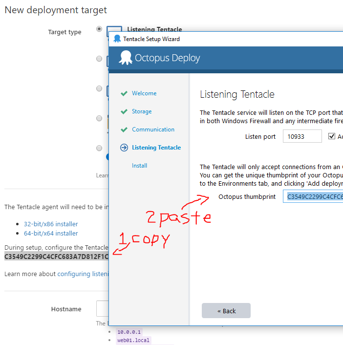
Leave the final page open so you can copy the tentacle thumbprint later.
Configure the Tentacle
Back in the Octopus web dashboard, enter
localhostfor hostname.Click
Discover.In the next screen, set Display Name to
Localhost-Dev.Environments is set to
Dev.In Roles, type
Web.Ensure the tentacle thumbprints match.
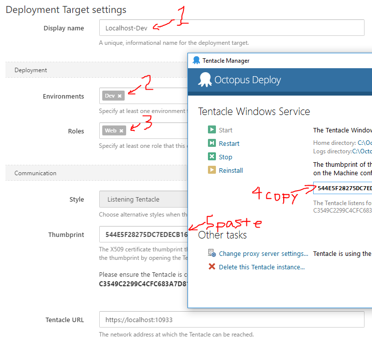
Click Save at the bottom.
Configure Test environment
Click
Add Environmenton the far right of the grey bar at the top (under the blue bar, above the green button).Name this environment
Testand clickSave.In the
Testrow, clickAdd deployment target.Choose
Listening Tentacle.Set host name to
localhost.Click
Discover.Set Display name to
Localhost-Test.Environments is
Test.Set Roles to
Web.Validate the tentacle thumbprints match.
Click
Saveat the bottom.
Modify the Build
Next we need to build an Octopus Deploy package, push it to the Octopus server, and trigger a release. We'll extend the build script to use OctoPack, and we'll leverage the Octo.exe command-line tool.
Already in the solution, the Web project contains the
OctoPackNuGet package. If this didn't exist, we'd fire up Visual Studio and add the package.Open up the solution folder, and open up
build.batin your favorite editor.Change the
msbuildline to this to run Octopack:msbuild WebApplication1.sln /m /p:Configuration=Release /t:Build /p:RunOctoPack=trueWe've added
/t:Build /p:RunOctoPack=trueto the end.Add these new lines to the bottom to push the package to Octopus:
Octo.exe push --package WebApplication1\obj\octopacked\WebApplication1.%BUILD_NUMBER%.nupkg --replace-existing --server http://localhost:8090 --apiKey %OCTO_KEY% if not %errorlevel% equ 0 ( exit /b %errorlevel% )This pushes the OctoPack package to Octopus Deploy.
Add these lines to the bottom:
Octo.exe create-release --project WebApplication1 --version %BUILD_NUMBER% --deployto=Dev --waitfordeployment --server http://localhost:8090 --apiKey %OCTO_KEY% if not %errorlevel% equ 0 ( exit /b %errorlevel% )This creates an Octopus release and sends it to the Dev server(s).
Add these lines to the top:
PowerShell -NoProfile -NoLogo -ExecutionPolicy unrestricted -Command "(Get-Content WebApplication1\Properties\AssemblyInfo.cs).replace('1.0.0.0', '%BUILD_NUMBER%') | Set-Content WebApplication1\Properties\AssemblyInfo.cs" if not %errorlevel% equ 0 ( exit /b %errorlevel% )This changes the
AssemblyInfo.csfile so it'll bake theBUILD_NUMBERversion into the app too.
The completed script now looks like this:
PowerShell -NoProfile -NoLogo -ExecutionPolicy unrestricted -Command "(Get-Content WebApplication1\Properties\AssemblyInfo.cs).replace('1.0.0.0', '%BUILD_NUMBER%') | Set-Content WebApplication1\Properties\AssemblyInfo.cs"
if not %errorlevel% equ 0 (
exit /b %errorlevel%
)
nuget restore
if not %errorlevel% equ 0 (
exit /b %errorlevel%
)
msbuild WebApplication1.sln /m /p:Configuration=Release /t:Build /p:RunOctoPack=true
if not %errorlevel% equ 0 (
exit /b %errorlevel%
)
packages\xunit.runner.console.2.2.0\tools\xunit.console.exe WebApplication1.Tests\bin\Release\WebApplication1.Tests.dll -nunit WebApplication1.Tests.xml
if not %errorlevel% equ 0 (
exit /b %errorlevel%
)
Octo.exe push --package WebApplication1\obj\octopacked\WebApplication1.%BUILD_NUMBER%.nupkg --replace-existing --server http://localhost:8090 --apiKey %OCTO_KEY%
if not %errorlevel% equ 0 (
exit /b %errorlevel%
)
Octo.exe create-release --project WebApplication1 --version %BUILD_NUMBER% --deployto=Dev --waitfordeployment --server http://localhost:8090 --apiKey %OCTO_KEY%
if not %errorlevel% equ 0 (
exit /b %errorlevel%
)
Octopus API key
In the previous steps, we referenced the %OCTO_KEY% environment variable. Let's issue an API key in Octopus, and save it in TeamCity.
In the Octopus Web App, click your name, and choose
Profile.Switch to the
API Keystab.Click
New API key.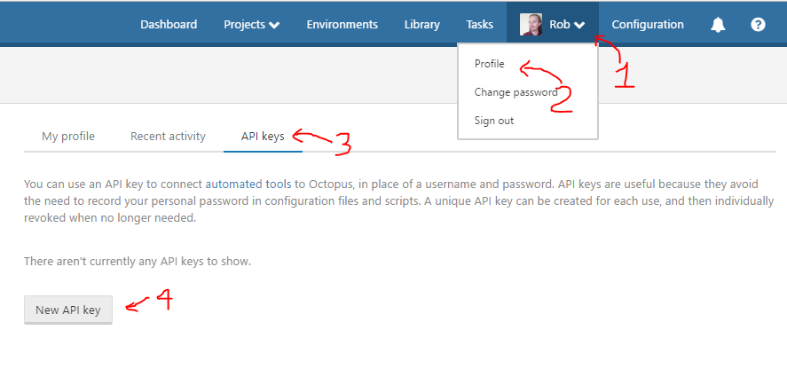
Name the key descriptively (perhaps
TeamCity).Click
Generate.Note the message that says these keys can't be retrieved.
Copy the API key.
Open the TeamCity Web App, and click
Administration.Click on
<Root project>in the middle of the page.Click on
Parameterson the left menu.Click on
Add new parameter.Change the Kind to
Environment Variable.Change the Name to
env.OCTO_KEY.Paste the API Key from Octopus into the Value box.
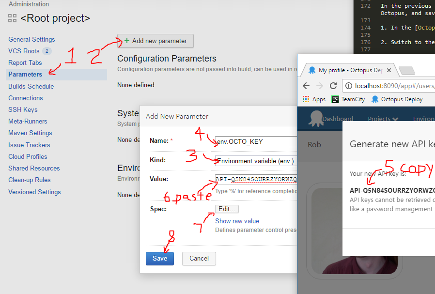
Click the
Specedit button.Change Display to
Hidden.Check the
Read-onlycheckbox.Change the Type to
Password.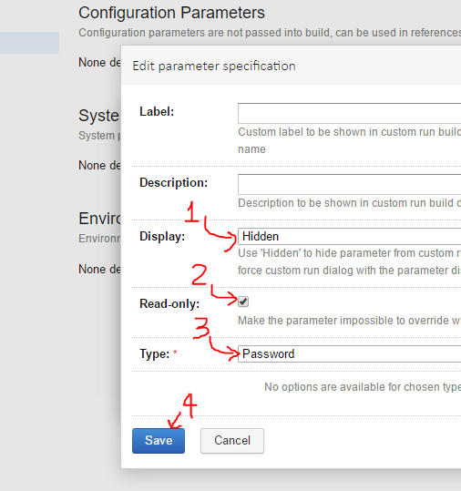
Push save.
Push save again.
The key is now saved.
Octo.exe
In the build above, we referenced Octo.exe, but we haven't installed it yet. Let's install it and add it to PATH.
Download
Command Linefrom Octopus DownloadUnzip
OctopusTools.bunch_of_numbers.zip.Create the folder
C:\Program Files (x86)\OctopusToolsCopy
Octo.exeinto this folder.Start -> Type
environment variablesto launchEdit System Environment VariablesClick
Environment Variables...In the lower
Systemsection, choosePATHand clickEditAdd
C:\Program Files (x86)\OctopusToolsto the list.Start -> Services.
Restart both
TeamCity ServerandTeamCity Build Agentso they'll get the newPATHenvironment variable. Restart any other services that depend onPATH.
Change Build Number Format
Octopus Deploy presumes the VERSION is 4 digits (e.g. 1.2.3.4), and TeamCity's version is currently only a single digit (e.g. 4). Let's change TeamCity's version to 1.0.BUILD#.0, and use the build's count to increment the Semantic Version of the app automatically.
Launch the TeamCity Web Dashboard at http://localhost:8080.
Since you just restarted it, it may take a minute for it to come up.
Click Administration on the top-right.
Click on
.NET Web Applicationin the middle of the page.Click on
.NET Web Applicationunder theBuild Configurationssection.Click the orange
Show advanced optionslink towards the bottom.Change Build number format to
1.0.%build.counter%.0.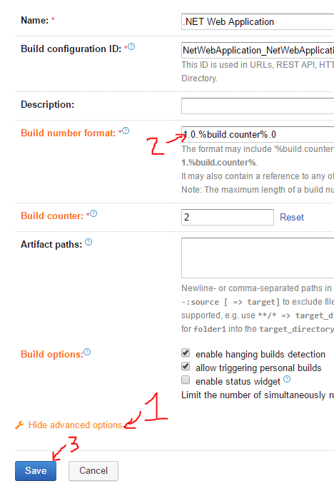
Click
Save.
Create a deployment project
Back in Octopus Deploy, we just did Step 3: Packaging. We haven't told Octopus yet since we haven't committed the build script or triggered a build. Now let's setup the release steps.
Launch the Octopus Web Dashboard at http://localhost:8090.
Click on
Create a Projectwithin the "Step 4" box.Click
Add your first Project.Set Name to
WebApplication1.Click Save.
Click
Define your deployment process.Click
Add your first step.Choose the
Deploy an IIS Web Sitestep template.Set the Step Name to
Deploy WebApplication1Set roles to
Web.The Package feed is
Octopus Server (built-in).Set the Package ID to
WebApplication1-- that's what we called it in the build script.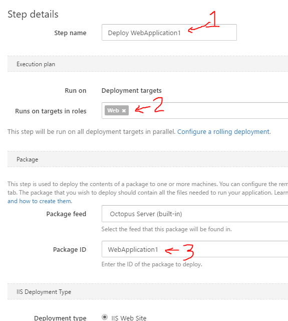
Scroll down, and let's configure more deployment properties. Here's all the properties we'd usually set in Internet Information Services (IIS).
IIS Web Siteis already selected.Name the WebSite
WebApplication1-then click the icon to the right, and pickOctoups.Environment.Namefrom the list. The full Web Site name is nowWebApplication1-#{Octopus.Environment.Name}. This means for Dev, it'll beWebApplication1-Devand for Test it'll beWebApplication1-Test.Set Application Pool the same way so it reads
WebApplication1-#{Octopus.Environment.Name}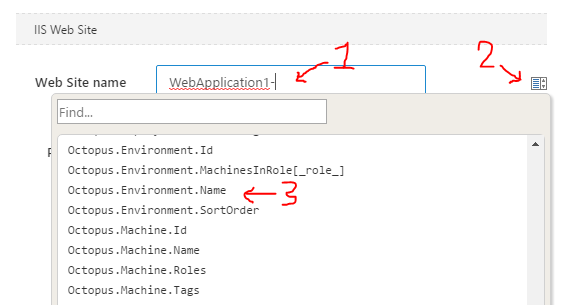
Scroll down to Bindings, and delete the current "Port 80" binding by clicking the grey
Xon the right.Click
Add binding.Change the port to
800then pickOctopus.Environment.SortOrderfrom the variable list. The final port is800#{Octopus.Environment.SortOrder}. This means Dev will be port 8000, and Test will be port 8001. As long as we have less than 10 environments, this strategy works great. In a real-world environment, we'd likely install tentacles on different machines, and leave the bindings at port 80 and 443.Click
Saveto complete the binding setup.Turn on
Enable Anonymous authentication.Turn off
Enable Windows authentication.Scroll through other settings, adjusting to taste.
Note the
Web.<EnvironmentName>.configsection. If we hadWeb.Dev.configandWeb.Test.configfiles in the source, we could automatically transform these settings as part of the deployment.Click
Configure featuresand note that it also replaces the#{Octopus...variables in config files as well.Click save at the bottom.
Commit build script
Now that we've got deployment configured in the build, in TeamCity, and in Octopus, let's put it to work. Let's commit the build script and kick off a deployment.
Open a command prompt in the source code directory.
Type
git add build.batto add the build file modifications.Type
git commit -m "build script now deploys"Type
git push origin masterOpen up the TeamCity Web Dashboard to see the new build kick off.
If the build went red the first time, that's ok. Open up the failed build, switch to the Build Log tab, scroll down, maybe opening up some of the
(+)buttons, and look at the gritty details. Adjust, commit, push, and watch the build.If everything went well, you'll see the build number's new format, the build log shows the OctoPack package, the release uploaded to Octopus Deploy, and the release pushed to Dev.
Open up the Octopus Deploy Web Dashboard to see the release pushed to Dev.
Open up Internet Information Services, and see the
WebApplication1-Devwebsite and app pool.Open up the Dev Website at http://localhost:8000 to see the deployed website.
This is a serious milestone. Jump up and celebrate. You have an automated build and deployment pipeline!
OCTOPUS DEPLOY TO TEST
Open up the Octopus Deploy Web Dashboard to see the release pushed to Dev.
Click on the green check under Dev and open up the details of this release.
In the top-right, click
Promote to Test.Click the green
Deploybutton in the middle of the page.Click the Octopus on the top-left, and see the build now in dev & test.
Open up the Test Website at http://localhost:8001 to see the deployed website.